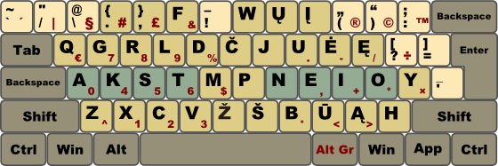
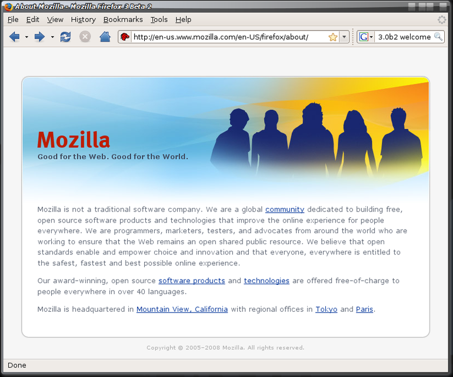
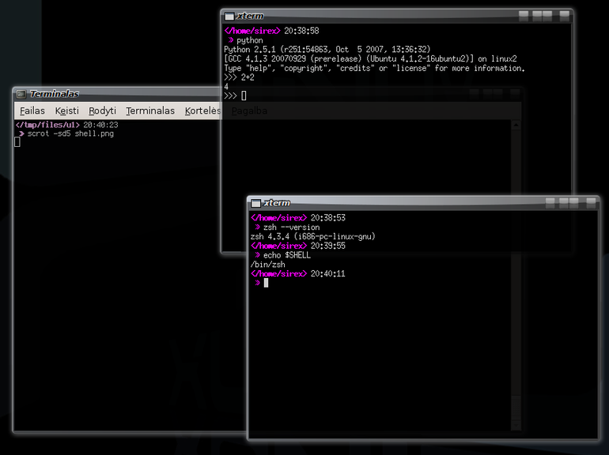
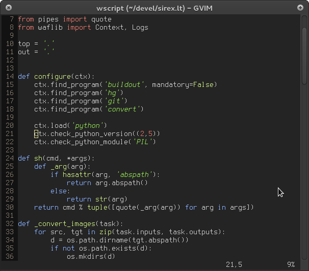
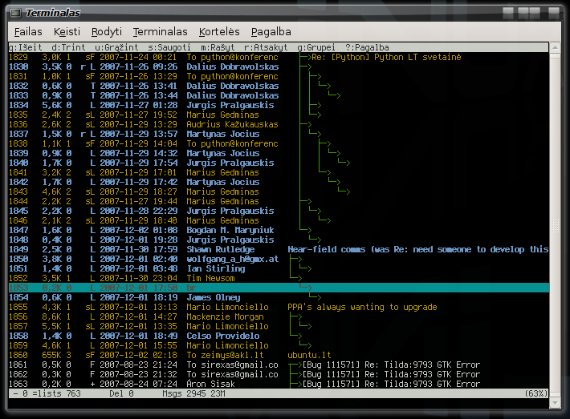
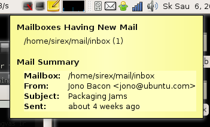
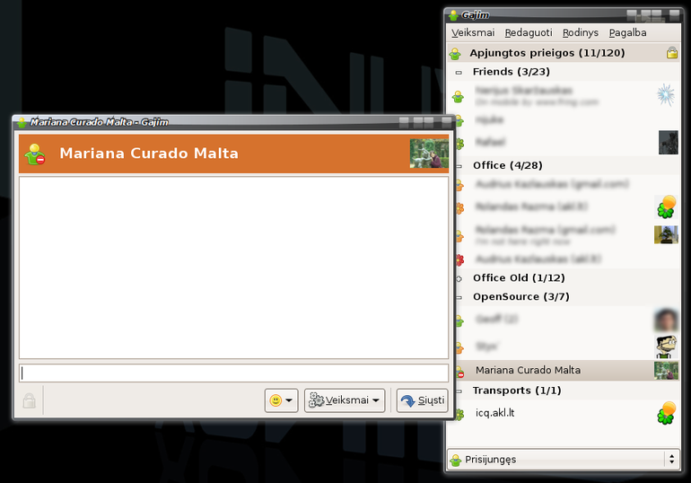
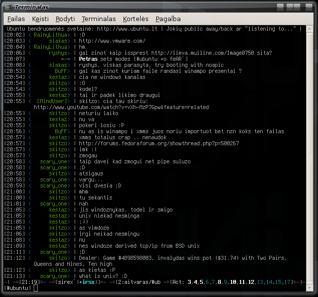

Kokias programas naudoju Ubuntu OS?
Ubuntu naudoju jau beveik 4 metus, per tą laiką esu išbandęs visą galybę įvairių programų. Po įvairių bandymų ir testavimų liko tik tos programos, kurios mano nuomone savo darbą atlieka geriausiai. Šiomis programomis naudojuosi jau gana ilgai ir per tą laiką neradau jokių geresnių variantų.
Programos, kurias naudoju nėra skirtos eiliniams naudotojams, tačiau jos tikrai tiktų tiems, kurie tikisi iš programos maksimalios naudos ir nebijo šiek tiek investuoti aiškinantis kaip programa veikia ir kaip ja naudotis. Rinkdamasis programas atsižvelgiu būtent į šiuos kriterijus. Kai kurie mano, kad jei jau yra grafinė naudotojo sąsaja, tai ji turėtu būti naudojama visose situacijose. O aš manau, kad reikiamas priemones reikia naudoti reikiamose vietose. Tarkim teksto redaktorius puikiausiai gali veikti tekstiniame rėžime, nes dirbama su tekstu, o ne su kokiais nors grafiniais elementais. Teksto redaktorius turėtu būti orientuotas į teksto redagavimą, o ne į IDE, perkrautą visokiais įrankiais, mygtukais ir meniu.
Klaviatūros išdėstymas (LEKPa)¶
{kind=link}
Pagrindinis kompiuterio įvesties įrenginys yra klaviatūra. Labai svarbu maksimaliai išnaudoti visas klaviatūros galimybes, kad galėtum dirbti labai greitai ir mastytum tik apie tai ką darai, o ne apie tai ką spaudai.
Kad pasiekti didžiausią greiti dirbant klaviatūra, būtina įvaldyti „akląjį spausdinimą“ (angl. touch typing). Kitas svarbus dalykas – klaviatūros išdėstymas. Kaip žinia populiariausias QWERTY išdėstymas buvo pritaikytas ne pirštams, o spausdinimo mašinėlės kaladėlėms, todėl savaime suprantama, kad QWERTY išdėstymas nėra pritaikytas greitam teksto surinkimui. Nesenai pasirodė lietuviškas, optimizuotas klaviatūros išdėstymas LEKP. Naudojuosi šiuo išdėstymu apie 3 mėnesiu. Skirtumas tikrai jaučiamas, rankos ne taip pavargsta, daugelis dažnai naudojamų simbolių sekų surenkamos tiesiog spustelėjus klavišus pagrindinėje klaviatūros eilėje. Po mėnesio naudojimosi LEKPa klaviatūros išdėstymu pagerinau ankstesniuosius teksto surinkimo greičio rezultatus.
Ir galiausiai, žmonės rašo šveplai, todėl kad pasiekti lietuviškas raides, išsidėsčiusias skaičių eilėje, tikrai sudėtinga. Renkant tekstą su LEKPa, lietuviškos raidės išsidėsčiusios patogiose vietose, todėl tekstas su lietuviškomis raidėmis renkamas lygiai taip pat patogiai kaip ir tekstas tik su lotyniškomis raidėmis.
Interneto naršyklė (FireFox)¶
{kind=link}
Kadangi mano darbas interneto svetainių kūrimas, o ir laisvalaikį dažnai leidžiu naršydamas internetą, tai viena dažniausiai naudojamų programų yra interneto naršyklė FireFox.
Kurį laiką bandžiau naudoti Opera, tačiau dėl kai kurių itin patogių FireFox extensionų, vėl grįžau prie FireFox. Itin patogūs extensionai yra:
Add Block Plus
del.icio.us
Drag and Drop
Komandinė eilutė (zsh, python, gnome-terminal, xterm)¶
{kind=link}
Jei dažnai naudojiesi kompiuteriu, tai kur kas patogiu įsiminti komandų pavadinimus, nei kas kart klaidžioti po tuos pačius meniu ir langus, kad kažką padarytum. Įvesti komandą arba tik jos pradžia yra kur kas patogiau, nei spaudinėti pele visokius mygtukus ar pasiklysti menių hierarchijoje…
Neįtikėtinas jausmas, kai vienoje vietoje, kelias klavišų paspaudimais gali pasiekti visas įmanomas funkcijas. Jautiesi tikru kompiuterio šeimininku.
Komandine eilute naudojuosi labai dažnai. Dirbu su failais, diegiu programas, dirbu su CVS/SVN, ir t.t.
% mv /tmp/failovardas ~/mydir
Asmeniškai man, parašyti tokią eilutę yra kur kas paprasčiau, nei atsidaryti programą skirtą darbui su failais, dviejuose skirtinguose languose susirasti reikiamus katalogus, failų sąraše susirasti reikiamą failą ir jį pertempti į kitą langą. Ką jau kalbėti apie tai (komanda ieško failų, pradedant nuo einamojo katalogo, pagal pateiktą paieškos raktažodį):
% ff *myfile*
Žinomo, kad darbui su komandomis reikia mokėti greitai dirbti su klaviatūra, kuo labai gerai pasitarnauja LEKPa.
Komandos yra gerai, tačiau reikia turėti ir gerus įrankius darbui su jomis, nes surinkinėti kiekvieną komandos simbolį yra labai nepatogu. Pirmas dalykas yra komandų interpretatorius, vadinamas shell. Standartiškai Ubuntu naudoja bash shell. Tačiau kur kas galingesnis yra zsh. Viena geriausių zsh savybių yra automatinis įvairių komandos dalių užbaigimas (angl. autocompletion). zsh, paspaudus TAB, sugeba užbaigti ne tik komandas, bet ir komandų parametrus, failus ir kitus su komanda susijusius argumentus. Todėl komandos `sudo aptitude install ubuntu-restricted-extras` įvedimas atrodo taip:
% sudo apt-g i ubre % sudo apt-gTAB iTAB ubTABreTAB % sudo apt-get install ubuntu-restricted-extras
zsh turi galybe kitokių įdomių ir naudingų funkcijų, todėl naudotis
komandine eilute tampa tikrai patogu ir malonu.
Jei reikia atlikti kokį nors matematinį skaičiavimą tiesiog pasileidžiu python interpretatorių. Jei pasigendu kokios nors komandos, tiesiog:
% vim ~/bin/trukstama_komanda
Susiprogramuoju ją su labai paprasta python programavimo kalba. Ir po kelių minučių jau galiu naudotis nauda komanda.
% trukstama_komanda
Kitas svarbus dalykas – terminalas. Naudoju du terminalus: gnome-terminal ir xterm. gnome-terminal dažniausiai pas mane būna visada paleistas ir ten vyksta daugiausiai darbo, todėl kad gnome-terminal yra tiesiog patogus darbui ir jo išvaizda lengvai keičiama (spalvos, šriftas). Taip pat yra labai patogios funkcijos, tokios kaip nuorodų atpažinimas, scrolinimo funkcija, kuri paprasčiausiai perduoda tokius pačius signalus kaip Up ir Down klavišų paspaudimai. Žinoma labai patogu ir žymės (angl. tabs). Taip pat naudoju ir xterm, kadangi jis yra labai lengvas ir labai greitai pasikrauna. Jį dažniausiai naudoju kai noriu ką nors patestuoti ar stebėti outputą su tail -f ar panašiai.
Teksto redaktorius (vim)¶
{kind=link}
vim pradėjau naudoti dar nuo Windows laikų, tai yra paprasčiausiai tobulas tekto redaktorius ir tiek. Dar prieš vim esu bandęs daug visokių redaktorių, kurie iš esmės veikė panašiai, tik skyrėsi mygtukų ar menių punktų gausa. vim yra visiškai kitoks, visiškai skiriasi pats teksto redagavimo būdas, kas ir daro vim geriausiu. Kai pagaliau išmokau naudotis vim, supratau, kad visi kiti teksto redaktoriai nė iš tolo jam neprilygsta. Naudojuosi vim programuodamas, tvarkydamas konfigūracinius failus, rašydamas laiškus ar šiaip tekstus jau daugiau nei 5 metus, šis postas taip pat sukurtas vim pagalba.
Vim turi galybę pluginų, todėl jį naudoju ir kaip DB klientą ir kaip Outlinerį.
El. pašto klientas (mutt)¶
 {kind=link}
{kind=link}
Yra programos, kurios gali viską, tačiau nei viena dalis neveikia taip kaip reikia, mutt veikia visiškai priešingai. Pati mutt programa daro tik vieną darbą (ir daro tai labai gerai) - tvarko laiškus. Visa kita yra patikėta kitoms programoms, kurias pats renkiesi ir kurios savo darbą taip pat atlieka nepriekaištingai. Kartu su mutt naudoju:
vim - rašau laiškus, kas gi gali būti geriau už vim, kai kalbama apie teksto redagavimą :)
fetchmail - parsisiunčiu laiškus iš pašto serverių, nesvarbu ar mano pašto programa įjungta ar ne, fetchmail tiesiog tyliai daro savo darbą ir tiek, vieną kartą sukonfigūruoji ir ilgam pamiršti, kad jis yra.
procmail - filtruoju spamą ir paskirstau laiškus į atitinkamas vietas, panašios programos veikia ir rimtuose pašto serveriuose. Jaučiuosi pamalonintas, kai mano asmeninį paštą tvarko tokie galingi įrankiai kaip šis.
elinks - paverčia HTML laiškus į tekstinius, visi laiškai atrodo lygiai taip pat :)
antiword - paverčia prisegtus DOC failus į paprasčiausią tekstą, todėl netenka vargintis ir atidarinėti jų su OpenOffice.
mail-notification - praneša apie naujai gautus laiškus.
Ir galiausiai mutt pagalba visa tai apjungiama, o rezultate gaunamas rinkinys pačių geriausių įrankių darbui su laiškais.
El. paštu naudojuosi labai dažnai, esu užsiregistravęs keliose el. pašto konferencijose ir šiaip dažnai rašau el. laiškus tiek darbo, tiek asmeniniais reikalais. mutt taip pat pradėjau naudoti dar windows laikais. Kelis mėnesius dar bandžiau naudotis thunderbird, tačiau jis toks didelis, o mane tereikia paštą patikrinti… :)
Kai viename mailboxe susikaupė daugiau kaip 2000 laiškų, mutt pradėjo ne taip greitai užsikraudinėti, kaip anksčiau (bet vis tiek gerokai greičiau nei thunderbird :) ). Suradau labai paprastą sprendimą, leidžiu mutt per screen, todėl jis kiek lėčiau užsikrauna tik pirmą kartą, o visus kitus kartus užsikrauna akimirksniu, nes screen dėka jis niekada neišjungiamas, nors pats terminalo langas ir išjungiamas.
Pokalbių programa (gajim)¶
{kind=link}
Gajim - Jabber klientas, kuris tiesiog veikia taip kaip reikia. Kadangi taip pat naudojuosi ir ICQ, o pats Jabber protokolas palaiko ir kitus protokolus, tai su Galim galiu naudotis ir ICQ, nors pats Gajim dirba tik su Jabber.
Outliner’is (VimOutliner)¶
{kind=link}
VimOutliner
Kadangi mano galva dažnai tiesiog plyšta nuo visokių idėjų, kurios gal būt niekada ir nebus realizuotos, tačiau naudinga jas kur nors išsaugoti. Taip pat rašau straipsnius, TODO, FIXME, specifikacijas ir t.t. Visam tam išsaugoti vienoje vietoje labai tinka Outliner’is, kuris paprasčiausiai skirtas rašyti tekstą ir jį suskirstyti į daug kategorijų, kad vėliau nepasimestum ir greitai surastum tai ko reikia.
Šis postą rašiau taip pat su VimOutliner.
Kadangi darbui su tekstu naudoju vim, tai outlineris yra vim pluginas, kuris tiesiog suteikia papildomų galimybių kategorizuoti tekstą. Tai gi vim puikiausiai atlieka savo darbą su tekstais, VimOutliner puikiausiai atlieką savo darbą – tekstų kategorizavimą.
IRC klientas (irssi)¶
{kind=link}
Šiaip jau pakankamai retai naudojuosi IRC, tačiau mano IRC klientas visada įjungtas, nors išoriškai to nesimato. Visa tai screen + irssi dėka.
Kai tik įjungiu kompiuterį, pasileidžia screen, kuris paleidžia irssi, screen ir irssi veikia kaip demonai ir išoriškai niekur nesimato, matosi tik paleisti procesai.
Dažniausiai per visą dieną nė karto nepasinaudoju irssi, tačiau jis visą laiką tyliai veikia ir jei kas nors parašo mano vardą, iššoksta pranešimas. Tada atsidarau irssi ir matau kas ir ko iš manęs norėjo. Taip pat jei sugalvoju įsijungti irssi, tai matau kas ką kalbėjo anksčiau.
irssi programa nuolat jungiasi prie dviejų serverių (aitvaras ir freenode),
taip pat per abu serverius prisijungiama prie 14 kanalų. Turiu
~/.irssi/config, kuris yra kruopščiai prižiūrėtas, visi kanalų langai
atsidaro specialiai skirtose vietose, kiekvienas kanalas turi taisyklių sąrašą,
kas turi būti filtruojama, kas ne ir t.t. Dėl labai paprasto ir minimalistinio
būdo atvaizduoti atidarytus langus, su irssi labai patogu dirbti, kai yra
atidaryta 10 ir daugiau pokalbių langų. Pas manu dažniausiai atidarytų langų
būna apie 15.
Su irssi galima susikurti savo aliasus ir klavišų kombinacijas, taip pritaikant programą savo poreikiams.